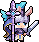

Guild of Monster Girls — Wiki
Datamined tactical database & squad deployment console for Guild of Monster Girls (Chillyroom).

Legion Commander M11301
Commands teammates with her banner. Targets the ally with highest ATK (excluding self) first. Restores {2} HP and grants {3} stacks of Inspire. If the target isn't self, they immediately take {4} extra actions.
Units →
Complete roster — standard + alter variants. Class, race, element, terrain, stats, active skill, talents.
Search · Units →
Filter all 194 units by class, type, race, element, terrain, step, archetype, and animated battle sprites.
Gacha Optimizer →
Daily recruitment picker — choose up to 3 tags from 4 categories to maximize 3-star (S-step) recruit probability.
Build Team →
Visual 3-character battle override editor — unit, talents, 10 gear slots + Heritage, 10 runes, and 6 jewels.
Search · Gear →
Filter 1,434 gear pieces by step, slot, class, stats provided, upgrade-attr, set bonds, and drop regions.
Gear Drop Rates →
Dungeon map drop probabilities and stamina certainty calculator for targeted weapon/armor farming.
Search · Runes →
Filter 144 runes across 4 rarities and 12 materials (Copper to Sacred) with passive stat bonuses and drops.
Ryms (Limes) →
Field tracker for all 50 Wild Ryms — Color Change, Transformation, and Elemental species with habitats.
Search · Jewels →
Filter 88 Jewel affix modifiers by category (Stat/Buff/Heal/Tank/Resist), rarity, prefix/suffix, and stackability.
Shops & Vaults →
Gold, Diamond, and Clover barter shops plus Golden Vault probability tables and roll simulator.
Talent Simulator →
Per-unit Talent Fruit reroll simulator — 4-row gacha with lock + soft pity and 100k Monte Carlo trials.
My Talents →
Personal talent organizer — assign talents across 4 loadout pages with browser save and player_save import.
Search · Talents (fulltext) →
Fast keyword search across name, effect text (EN + CN), restrictions, and archetype tags with highlighted hits.
Search · Talents (facet) →
Filter talent groups by tier, restriction (race, class, element, generic), and single-unit exclusivity.
Prophecies →
Ancient prophecy cards forecasting dungeon stage affixes, enemy enhancements, and blessing cards.
Search · Blessings →
Datamine of all stage blessings, combat perks, elemental damage amplifications, and survival boons.
Keywords →
82 game-term references — Chill, Toughness, Weakness exposed, Shield, Burn, and combat formulas.
Mechanics →
In-game formulas — gear star-up, Legacy bond+1, Fate Die, recruit rates, Seven-Days Map, and damage pipelines.
News →
Wiki updates and patch notes — datamined changes, stat adjustments, and latest additions.
Tactical Quick Guides
- Daily gacha: open the Gacha Optimizer, click your 7 tags, see best combo (3-star density %).
- Unit research: browse Search Units to filter all 194 monster girls with dual Table/Grid view and live animated sprites.
- Gear and Runes: browse Gear (1,434 items) and Runes (144 runes) with set bonuses and drop tables.
- Farming Certainty: open Gear Drop Rates to calculate expected runs and stamina for 95% confidence.
- Game term lookup: keywords like Chill, Toughness, Weakness exposed are linked from profiles to dedicated keyword pages.
Codex Notes
- Step = rarity: S = 3-star (highest), A = 2-star, B = 1-star, C = 0-star.
- Alter vs Standard: alter units (suffix
_NNN, e.g.M53301_001) are skinned variants with distinct elements/kits. Treated as separate units in gacha optimizer and team builder. - Upcoming alters (loc-only, no DataTable row yet) are excluded from this publish.